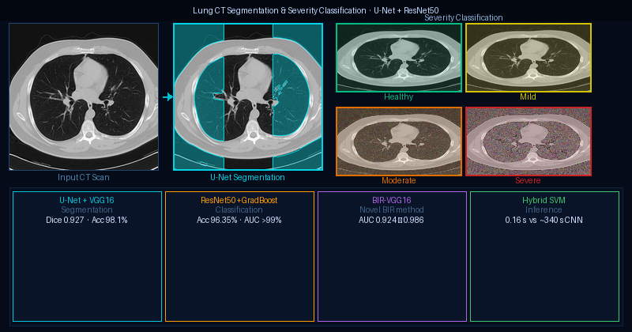
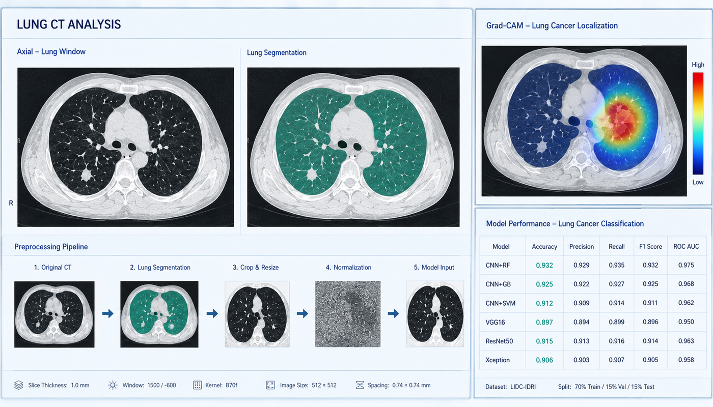
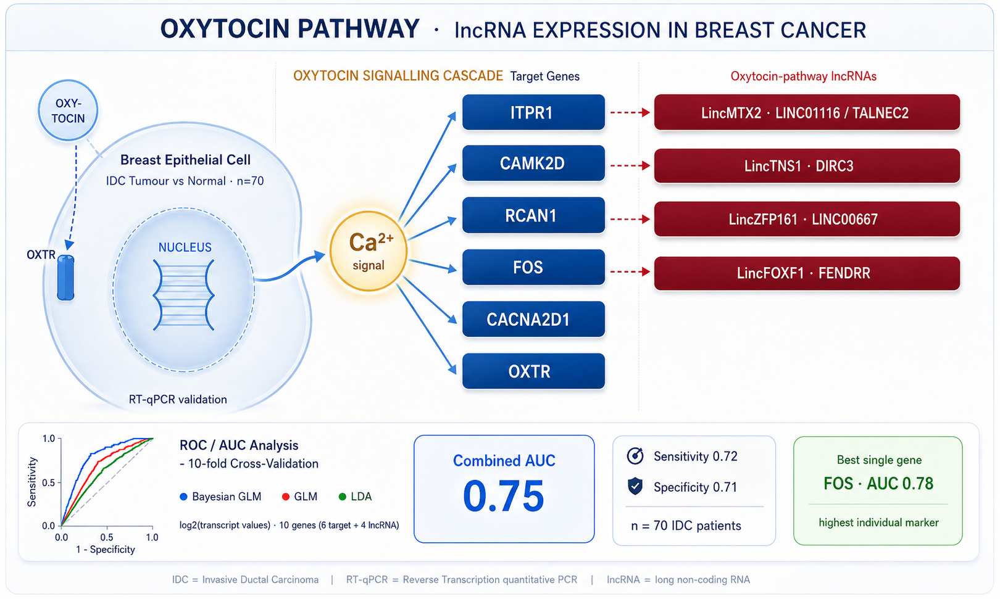
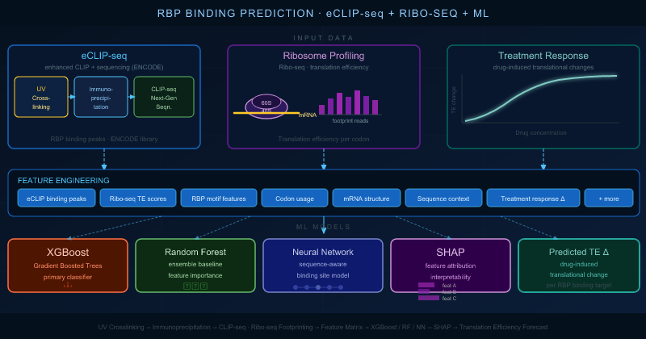
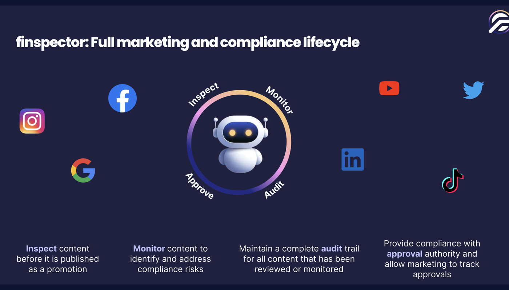
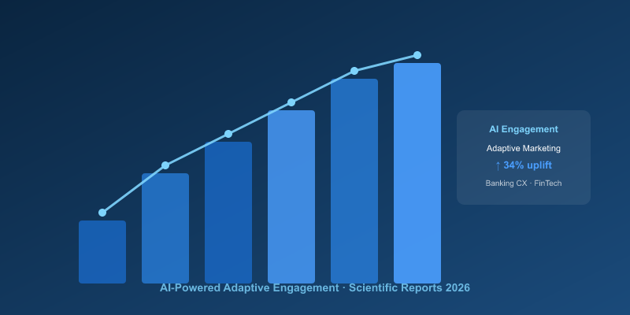
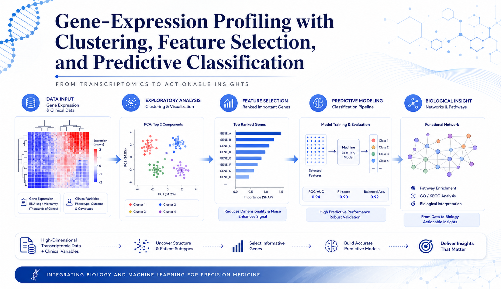
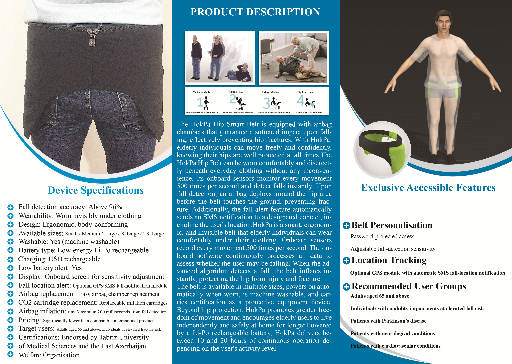

End-to-end ML systems across medical imaging AI, bioinformatics, and AI-powered automation — from data curation and modelling through explainability and cloud deployment.

Medical Imaging · Deep Learning
GoodMind CT/MRI Neurodiagnostic Platform
GoodFolio LTD · May 2025 – Present
- CNN and 3D vision models for stroke, dementia and brain tumour classification from CT/MRI scans.
- Grad-CAM heatmaps and confusion-matrix analysis for explainable diagnostic-support outputs.
PyTorchResNet50VGG16Grad-CAMDICOMU-Net

Medical Imaging · Deep Learning
CT-Stroke Classification Workflow
GoodFolio LTD · 2025 – Present
In stroke, every minute counts — a patient can lose around two million brain cells a minute. This workflow reads CT scans to classify normal, ischemic, and haemorrhagic stroke, helping clinicians decide on treatment before the window closes.
CNNXceptionPythonDICOMTriage AIGrad-CAM

Medical Imaging · Deep Learning
Lung CT Segmentation & Severity Classification
Scientific Reports, May 2026
Hybrid deep learning framework on chest CT slices across four severity classes — Healthy, Mild, Moderate, Severe — with 5-fold cross-validation. Combined U-Net segmentation, CNN-based classification (VGG16, ResNet50, Xception), and classical ML (SVM, Gradient Boosting) with CLAHE preprocessing. Introduced a novel Brightness Intensity Range (BIR) method for pixel-level lung analysis.
U-NetVGG16ResNet50CLAHESVMGradBoostBIR

Medical Imaging · Deep Learning
CT-Based Lung Cancer Detection — Deep Learning Framework
Accepted · Discover Computing (Springer Nature)
Binary lung cancer classification from chest CT, comparing seven architectures — standalone CNN, hybrid CNN-ensemble models, and fine-tuned pre-trained networks — with and without morphological lung segmentation.
PythonCNNResNet50VGG16XceptionGrad-CAM
Neuroscience · Deep Learning
Automated Trigeminal Neuralgia Detection — CNN-Attention EEG
Accepted · Comparative ML Study
EEG reads the brain's electrical activity through scalp electrodes — millisecond-fast, non-invasive, and sensitive to the brainwave bands that encode how the nervous system responds to pain. This study asks whether those signals can automatically identify trigeminal neuralgia, one of the most debilitating pain disorders known.
PythonCNNAttentionEEGSignal ProcessingMachine Learning

Bioinformatics · Diagnostic Modelling
Oxytocin lncRNA — Breast Cancer Diagnostics
Published · Scientific Reports, Mar 2021
Can oxytocin-pathway lncRNAs serve as diagnostic biomarkers in breast cancer? This study is the first to characterise their expression in invasive ductal carcinoma, linking bioinformatic discovery to predictive modelling.
View on GitHub
RROC/AUCBayesian GLMLDART-qPCR10-fold CV

Bioinformatics · Translational Genomics
RBP Disease Prediction Pipeline
Research Project · GitHub
Predictive ML pipeline integrating ENCODE eCLIP binding signals from 139 RNA-Binding Proteins with Ribo-seq data to forecast treatment-driven translational changes in K562 leukaemia cells. Built and compared multiple classifiers across three iterative experiments — with hyperparameter optimisation via RandomizedSearchCV — and applied SHAP for biological interpretability of the best-performing model.
View on GitHub
PythonXGBoostAdaBoostRandom ForestKNNNaive BayesSGDSHAPRibo-seqENCODEeCLIP

AI Agents & FinTech
Finspector — AI-Powered Financial Promotions Compliance
GoodFolio LTD · 2025 – Present
Purpose-built AI compliance platform for regulated financial firms — automating the full marketing review lifecycle (Inspect · Monitor · Audit · Approve) across social media, video, audio and web. Powered by LLM models and ADK agents trained on FCA, SEC and jurisdictional rulebooks; every output maps to an explicit rule for defensible, explainable oversight. Human-in-the-loop design with full audit trails and zero third-party data sharing.
FCA ComplianceAI AgentsGoogle ADKRegTechExplainable AILLM (GPT · Gemini · BERT)Audit TrailSocial Monitoring

AI Agents & FinTech
AI-Powered Adaptive Engagement Framework
Published · Scientific Reports, Apr 2026
Research on enhancing banking customer experience through AI-powered invisible marketing — adaptive engagement strategies with measurable CX uplift in FinTech.
View Publication
AINLPFinTechAdaptive Systems

Bioinformatics · Clinical AI
ML on Gene-Expression & Clinical Data
Geniran Research Laboratory · 2021–2022
End-to-end ML pipeline on gene-expression (RNA-seq / microarray) and clinical datasets for health vs. disease differentiation and disease categorisation — normalisation, batch correction, PCA, LASSO/Elastic Net feature selection, and RF · XGBoost · SVM classifiers with nested cross-validation. SHAP-based explainability for biological interpretation and hypothesis generation.
PythonRXGBoostRandom ForestSVMSHAPPCARNA-seqscanpyTensorFlow

Medical Devices · Embedded AI
HokPa Hip — Wearable Fall-Detection Device
Sazeh Teb Parla · Feb 2021
Hip fractures from falls are among the most serious injuries in older adults. HokPa Hip is a smart wearable belt that detects falls in real time and automatically deploys airbag chambers around the hip before ground impact — protecting against fractures without restricting everyday movement.
PythonSignal ProcessingDecision TreeFeature EngineeringEmbedded MLDeep Learning
 ORCID
ORCID